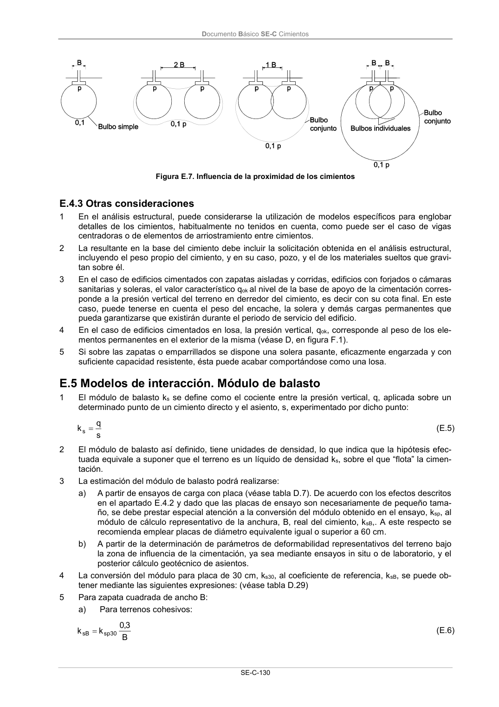

DB-SE-C · Página 135 · versión 2019-12-20
SHA256: a71133f4b0dca253e45ea3071c70f2a512354bcc5cd841bf89b1a502f567ac5e · página física 135 de 165 · métodos de encabezado
solo si están cotejados.
Documento · ← p. 134 · p. 136 →
Formatos: Markdown · JSON de bloques · PDF p. 135 · imagen PNG
Documento Básico SE-C Cimientos SE-C-130 Figura E.7. Influencia de la proximidad de los cimientos E.4.3 Otras consideraciones 1 En el análisis estructural, puede considerarse la utilización de modelos específicos para englobar detalles de los cimientos, habitualmente no tenidos en cuenta, como puede ser el caso de vigas centradoras o de elementos de arriostramiento entre cimientos. 2 La resultante en la base del cimiento debe incluir la solicitación obtenida en el análisis estructural, incluyendo el peso propio del cimiento, y en su caso, pozo, y el de los materiales sueltos que gravi- tan sobre él. 3 En el caso de edificios cimentados con zapatas aisladas y corridas, edificios con forjados o cámaras sanitarias y soleras, el valor característico qok al nivel de la base de apoyo de la cimentación corres- ponde a la presión vertical del terreno en derredor del cimiento, es decir con su cota final. En este caso, puede tenerse en cuenta el peso del encache, la solera y demás cargas permanentes que pueda garantizarse que existirán durante el periodo de servicio del edificio. 4 En el caso de edificios cimentados en losa, la presión vertical, qok, corresponde al peso de los ele- mentos permanentes en el exterior de la misma (véase D, en figura F.1). 5 Si sobre las zapatas o emparrillados se dispone una solera pasante, eficazmente engarzada y con suficiente capacidad resistente, ésta puede acabar comportándose como una losa. E.5 Modelos de interacción. Módulo de balasto 1 El módulo de balasto ks se define como el cociente entre la presión vertical, q, aplicada sobre un determinado punto de un cimiento directo y el asiento, s, experimentado por dicho punto: s q k s (E.5) 2 El módulo de balasto así definido, tiene unidades de densidad, lo que indica que la hipótesis efec- tuada equivale a suponer que el terreno es un líquido de densidad ks, sobre el que “flota” la cimen- tación. 3 La estimación del módulo de balasto podrá realizarse: a) A partir de ensayos de carga con placa (véase tabla D.7). De acuerdo con los efectos descritos en el apartado E.4.2 y dado que las placas de ensayo son necesariamente de pequeño tama- ño, se debe prestar especial atención a la conversión del módulo obtenido en el ensayo, ksp, al módulo de cálculo representativo de la anchura, B, real del cimiento, ksB,. A este respecto se recomienda emplear placas de diámetro equivalente igual o superior a 60 cm. b) A partir de la determinación de parámetros de deformabilidad representativos del terreno bajo la zona de influencia de la cimentación, ya sea mediante ensayos in situ o de laboratorio, y el posterior cálculo geotécnico de asientos. 4 La conversión del módulo para placa de 30 cm, ks30, al coeficiente de referencia, ksB, se puede ob- tener mediante las siguientes expresiones: (véase tabla D.29) 5 Para zapata cuadrada de ancho B: a) Para terrenos cohesivos: B 3,0 k k 30 sp sB (E.6)
